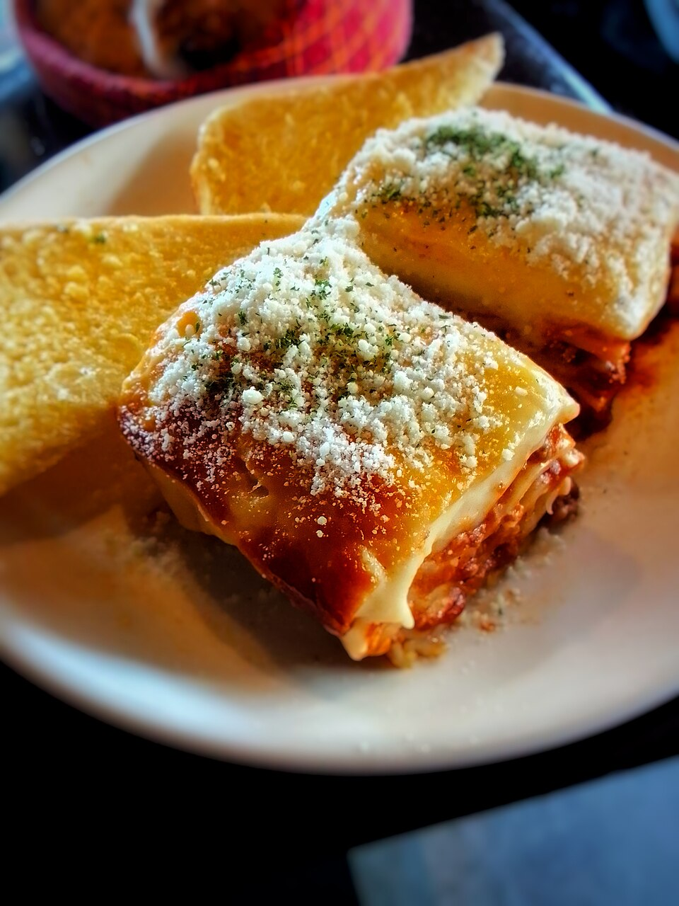

Lasagna

Photo: Derk29, CC BY-SA 4.0, via Wikimedia Commons
Description
Lasagna is a hearty Italian baked pasta dish made with layers of wide noodles, a rich meat and tomato sauce, creamy ricotta, and plenty of melted cheese. It is comfort food at its best: saucy, cheesy, and deeply satisfying.
This version uses a simple beef and marinara sauce, but you can easily swap in ground turkey, Italian sausage, or a vegetable filling. Assemble it ahead of time and bake it when you are ready to eat — it also reheats beautifully the next day.
Ingredients
- 12 lasagna noodles
- 1 pound ground beef
- 1 medium onion, diced
- 2 cloves garlic, minced
- 24 ounces marinara sauce
- 15 ounces ricotta cheese
- 1 large egg
- 2 cups shredded mozzarella cheese
- 1/2 cup grated Parmesan cheese
- 1 teaspoon dried oregano
- Salt and freshly ground black pepper, to taste
- Fresh basil, for serving (optional)
Steps
- Preheat the oven to 375°F (190°C). Cook the lasagna noodles according to the package directions, then drain and set aside.
- In a large skillet, cook the ground beef, onion, and garlic over medium heat until the beef is browned. Drain off the excess fat.
- Stir the marinara sauce and oregano into the skillet. Season with salt and pepper, then simmer for about 10 minutes.
- In a bowl, combine the ricotta, egg, half of the Parmesan, and a pinch of salt and pepper.
- Spread 1 cup of the meat sauce over the bottom of a 9x13-inch baking dish. Layer noodles, ricotta mixture, meat sauce, and mozzarella. Repeat the layers, then finish with noodles, the remaining sauce, mozzarella, and Parmesan.
- Cover the dish with foil and bake for 25 minutes. Remove the foil and bake for another 15 to 20 minutes, until bubbly and golden on top.
- Let the lasagna rest for 10 minutes before slicing. Garnish with fresh basil, if desired.
Home